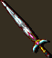
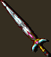

Installation
Extract this utility to your game folder. The main component makes no changes to your actual game or WeiDU log, so you can run it as many times as you wish.
You can extract files from the archive using WinRAR, 7-Zip or another file compression utility that handles .rar files.
Run setup-bambatch.exe in your game folder to use the utility.
Mac OS X
Extract the contents of the mod to your game folder. On successful extraction, there should be a /bambatch subfolder in your game folder. Download the OS X version of WeiDU (or copy another mod's launcher) and rename it setup-bambatch. Put this and the setup-bambatch.command file within the /bambatch subfolder in your main game folder. To use, double-click on setup-bambatch.command and follow the instructions on screen.
Linux
Extract the contents of the archive to your game folder. Download the latest Linux version of WeiDU and copy WeiDU and WeInstall to /usr/bin. Then open a terminal and cd to your game directory.
Run WeInstall setup-bambatch in your game folder to use the tool.
Back To Top
Components
There are two main components. Each component has subcomponents as detailed below.
BAM Batcher
1. Convert BAMs to BMPs
This option will attempt to extract all frames from the BAMs in the /bambatch/bam folder. It will save these as BMPs to the /bambatch/bmp folder. It will place a number after the filename indicating the BAM frame number.
2. Convert BMPs to inventory BAMs
This option will attempt to assemble similarly-named bitmaps in the /bambatch/invlarge and /bambatch/invsmall folders. It will save these as inventory BAMs to the /bambatch/bam folder. The filenames must have the same name with the exception of the last character, which must be the letter 'l' for large icon frames and 's' for small frames. See the relevant folders for examples (iamul01l.bmp and iamul01s.bmp). Inventory icons have the large icon (maximum of 64 pixels) centered (half each dimension) and the small icon (maximum of 32 pixels) offset for its difference from the 32-pixel maximum (usually a negative number).
As of version 2.4, the large and small frames are no longer required to use the exact same 256-color palette. However, it is recommended to keep the total number of different colors used to around 256, or at least make sure both frames use similar colors. The reason for this is that once the first 256 colors are used, additional colors will simply be remapped to the "nearest-neighbor" color already in the palette. If the palette contains teal and pink for the transparent and shadow colors (as set by BAMWorkshop), these colors will automatically be corrected to green and black. After this check is performed, the first two palette entries (which are reserved for the transparent and shadow colors) will be set as green and black respectively. Any pixels using these two colors will be remapped to use these palette entries. The original behavior of this component can be restored by changing the line "OUTER_SET UnifyPalette = 1" to "OUTER_SET UnifyPalette = 0" in setup-bambatch.tp2.
3. Convert BMPs to spell BAMs
This option will attempt to assemble bitmaps in the /bambatch/spell folder. It will save these as spell BAMs to the /bambatch/bam folder. Spell icons are a maximum of 32 pixels and are offset from the difference from the 32-pixel maximum.
4. Convert BMPs to description BAMs
This option will attempt to assemble bitmaps in the /bambatch/desc folder. It will save these as description BAMs to the /bambatch/bam folder. Description BAMs won't display properly if wider than ~166 pixels, though they can be somewhat larger in height than width. They are centered (offsets are half each dimension).
Note: Since description BAMs have a single centered frame, this option will also work for ground icons and many other "miscellaneous" BAMs. Neither this nor other options will work for assembling creature animations, which require special attention to make sure the creature's feet are centered in each frame.
5. Fix inventory BAM coordinates
This option will attempt to fix an inventory BAM in the /bambatch/bam folder whose X and Y coordinates are not properly offset (as described above in option 2). It is not necessary if you've used the option above, which will format the coordinates properly. The only stipulation is that the large inventory icon frame needs to be wider than the small icon (as it should be, since it includes at least a shadow).
6. Fix spell BAM coordinates
This option will attempt to fix a spell BAM in the /bambatch/bam folder whose X and Y coordinates are not properly offset (as described above in option 3). It is not necessary if you've used the option above, which will format the coordinates properly.
7. Fix description BAM coordinates
This option will attempt to fix a description, ground or miscellaneous BAM in the /bambatch/bam folder whose X and Y coordinates are not properly offset (as described above in option 4). It is not necessary if you've used the option above, which will format the coordinates properly.
Note: The formatter will not work correctly for description BAMs quartered with four frames in the BG1 style. You will need to set those coordinates manually, which should be as follows:
Frame 0: offset by entire dimensions of the frame
Frame 1: offset by zero horizontally, full dimensions vertically
Frame 2: offset by full dimensions horizontally, zero vertically
Frame 3: offset by zero both horizontally and vertically
8. Decompress BAMs
This option will decompress BAMs in the /bambatch/bam folder. It will have no effect on BAMs that are already decompressed (and will tell you so).
9. Compress BAMs
This option will compress BAMs in the /bambatch/bam folder. It will have no effect on BAMs that are already compressed (and will tell you so). It is not necessary if you've used the conversion or fixing options above, which will compress the BAMs automatically (as are most BAMs in the game).
10. List BAMs and dimensions
This option outputs a list of all BAMs in the /bambatch/bam folder to the file /bambatch/backup/bam_list.txt. It will list each BAM, frame number, and the width and height of each frame. You can modify this to work with in-game BAMs as described above in subcomponent 1.
11. List BMPs and dimensions
This option outputs a list of all bitmaps in the /bambatch/bmp folder to the file /bambatch/backup/bmp_list.txt. It will list each bitmap followed by its width and height.
12. List GIFs and dimensions
This option generates the HTML code used to display the images in this very readme and outputs it to the file /bambatch/backup/gif_list.txt. You can modify it for use in your own mod's readme (or any other HTML documents).
13. Repalette BAMs from a BMP
This option will attempt to repalette BAMs in the /bambatch/bam folder. It will take the palette from the 8-bit, 256-color bitmap in the /bambatch/palette folder. The name of the BMP must match the first six (6) characters of the BAM file(s) you want to repalette. For example, you might have MBERG1.bam and MBERG1E.bam in the /bambatch/bam folder, and a bitmap named MBERG1.bmp in the /bambatch/palette folder. BAM file will be edited in place.
14. Convert BMPs to paperdoll BAMs
This option will attempt to assemble similarly-named bitmaps in the /bambatch/paperdolltop and /bambatch/paperdollbottom folders. It will save these as paperdoll BAMs to the /bambatch/bam folder. The filenames must have the same name with the exception of the last character, which must be the letter ‘t’ for the top frames and ‘b’ for the bottom frames. See the relevant folders for examples (MGNLINVt.bmp and MGNLINVb.bmp). Both BMPs must use exactly the same palette. Each of these frames should have dimensions of 128x80 pixels in order for the frame offsets to be correct. The frames in the resulting BAMs can then be trimmed using an external tool, such as BAM Resizer.
15. Convert inventory BAMs to EE
This option will attempt to modify traditional inventory BAMs in the /bambatch/bam folder so that both the large and small icons are utilized by the EE games. The inventory BAM must have two sequences, the first containing the "large" inventory icon frame and the second containing the "small" inventory icon frame to be processed. Inventory icon BAMs in the /bambatch/bam folder that meet these requirements are patched and saved back to the /bambatch/bam folder, overwriting the original. Note that a backup of the original BAMs can be found in the /bambatch/backup folder as usual.
16. Fix BAMWorkshop colors
This option will fix any teal Transparent and pink Shadow colors (set by BAMWorkshop) found in the BAMs in the /bambatch/bam folder so that they use the proper green and black colors used by the game engine.
Moinesse's BAMs
1. BAMs only
This option will copy all BAMs from /bambatch/moinbam to your game /override folder.
2. BAMs with test items
This option will copy all BAMs from /bambatch/moinbam to your game /override folder. In addition, it will copy items based on the source BAM also to the /override folder and patch them into a store. In Tutu, this is the Candlekeep Inn (_inn2616.sto). In BG2 or BGT, this is Min's Merchandise (shop01.sto), the merchant directly east of the Circus Tent in Waukeen's Promenade. This allows you to see how the BAMs will look in-game.
Of course, the best option for this component is [N]ot to install it, and to create your own items with the BAMs already referenced in the inventory icon field (hex reference 0x3a). Then you can copy the items with your own mod installer. See setup-sample.tp2 in the /bambatch/tools folder for an example.
You can see a list of all 179 BAMs and sample images below.
Tools
The mod includes several utilities in the /tools subfolder that are not installed with either component.
1. Paint Shop Pro palettes
I've included several PSP palettes I use for BAMs. These are probably convertable to Photoshop or another format (though offhand I can't tell you how to do that).
BGDesc1.PspPalette - a standard palette for description BAMs
BGDesc2.PspPalette - a somewhat modified version of the above palette
BGDesc3.PspPalette - a subtler and darker description BAM palette
BGIcons.PspPalette - a standard inventory BAM palette (used by Moinesse and others)
BGScrollBlue.PspPalette - a palette for making blue scroll BAMs
BGScrollRed.PspPalette - a palette for making red scroll BAMs
BGScrollWhite.PspPalette - a palette for making white scroll BAMs
BGSpellBlue.PspPalette - a palette for making blue spell icons
BGSpellRed.PspPalette - a palette for making red scroll icons
BGSpellWhite.PspPalette - a palette for making white scroll icons
2. Sample templates
These are files you can use as templates for making your own.
setup-sample.tp2 - a sample TP2 installer for an item mod
spla-blu.bmp - a sample bitmap for a blue spell scroll
spla-red.bmp - a sample bitmap for a red spell scroll
spla-whi.bmp - a sample bitmap for a white spell scroll
splb-blu.bmp - a sample bitmap for a blue spellcasting icon
splb-red.bmp - a sample bitmap for a red spellcasting icon
splb-whi.bmp - a sample bitmap for a white spellcasting icon
splc-blu.bmp - a sample bitmap for a blue spell book icon
splc-red.bmp - a sample bitmap for a red spell book icon
splc-whi.bmp - a sample bitmap for a white spell book icon
swatches.bmp - a palette used for on-the-fly BAMs
It includes the following colors:
Brown - close to default inventory screen background
Tan - close to default description BAM background
Near black - close to large icon shadow
Pink - botched BAM Workshop shadow color
Cyan - ground icon outline
Teal - BAM Workshop transparency color
Green - default game transparency color
Finally, the /tools folder contains a template (template.bam) for making inventory icons with BAM Workshop. BAM Batcher makes BAM Workshop somewhat obsolete for making multiple BAMs, but it can still be useful for touching up single BAMs. To use this template with it, just delete the single frame to fix palette issues, then import your own bitmap frames.
•Back To Top
Frequently Asked Questions
Q: How do I rename files?
A: You may want to rename files output by the tool. For example, the BAM to BMP conversion option labels bitmaps with a number corresponding to their frame order in the BAM file. You may wish to replace these with 'l' or 's' for easier identification as large or small inventory icon frames.
You can use a tool similar to the Bulk Rename Utility or another that supports regular expressions(regexp) - indeed, even WeiDU itself. Bulk Rename is quite easy, however. You can right-click on the bmp folder, select Bulk Rename Here and enter the following information in the relevant fields under RegEx:
If all frames ending in '0' correspond to large icons:
Match: (^[a-z]+)([0-9]{2})(0$)
Replace: \1\2l
If all frames ending in '1' correspond to small icons:
Match: (^[a-z]+)([0-9]{2})(1$)
Replace: \1\2s
The above examples basically tell it to replace the first alphabetical characters with themselves, the second two numbers with themselves, and the last number with an 'l' or 's' as relevant.
Q: How do I convert images from one format to another?
A: You may have a number of files saved as GIFs you wish to save as bitmaps, or bitmaps you need to manipulate so they're in the right format. Or you may want to convert your BMPs to GIFs to display them online better. Most image editing programs can handle such operations in batch mode.
In Paint Shop Pro
Go to File > Batch Process, Browse and Select All the GIFs from a whole folder. Then pick "New Type" under Save Mode and BMP as the Type under Save Options and specify the output folder. For bitmaps, make sure the Options are set to standard RGB coding (the default for most programs) rather than Run length encoding.
In Photoshop
Go to File > Automate > Conditional Mode Change. Choose Source Mode: Bitmap and Target Mode: Indexed Color. The Batch menu option may also be able to convert multiple files to another format.
You'll also need to ensure your source bitmaps are in 256-color 8-bit format.
In Paint Shop Pro
Go to Image > Decrease Color Depth > 256 Color palette. Choose Optimized Octree, Error diffusion and Reduce color bleeding to produce the best results.
In Photoshop
Go to Image > Mode > Indexed Color. Choose Palette: Local (Selective), Colors: 256, Dither: None. You may get better results with other options, depending on the source image.
If you don't have either program, even MS Paint can open most files and Save As a 256 Color Bitmap, though this will likely produce substandard results. You are better off downloading GIMP for free.
Q: How do I make sure my bitmaps use the same palette?
A: Use the tips above to reduce your largest frame to 256 colors. Then:
In Paint Shop Pro
Go to Image > Palette > Save Palette. Name and save it, then switch to the other image and go to Image > Palette > Load Palette and choose Nearest color matching.
In Photoshop
Go to Image > Mode > Color Table. Save and name it, then switch to the other image and go to Image > Mode > Color Table and Load it.
Q: Can I get that in-game background look like the icons below?
A: Yes, there is a line (currently around #133) in the .tp2 file you can uncomment for that. Otherwise, exported bitmap backgrounds get the default game transparency color (a bright green).
Q: Why do some files take long to convert?
A: This can happen sometimes with run-length encoded BAM frames or bitmaps that have too many transparent pixels. For this reason, crop your bitmap as close as possible to the edges of the actual image. Your files will be smaller and will convert more quickly without losing any data. This usually isn't a problem for most game BAMs which are formatted this way by default.
Q: Can I undo changes I've made?
A: If you are not satisfied with the changes made (for example, by fixing BAM coordinates), just restore the original files from your backup subfolder. In any case, you should delete the files in your backup folders regularly, as they may pile up. You do not need to delete files with a numeric extension, however. WeiDU generates these automatically.
Q: What do I do if I get an error message when using this?
A: Make sure you've followed the instructions for what you're trying to do. If it still happens, open the .tp2 file with a text editor, fix the code and post the corrections ;). Oh, okay … if you're not comfortable with fixing code, post the error message and the source file you're using at shsforums.net.
Q: Can I reassemble modified creature animations with this?
A: Not currently, since they're quite complex. They have several cycles, each with separate frames, and none of them seem to have intuitive X and Y offsets, so someone has to manually determine where they should be. If someone can give me specifications for exact assembly (or better yet, write the code for it), I can consider adding this.
Q: Can I translate this tool to another language?
A: Sure, and you can start with this readme. Seriously, that will be the hard part. I didn't bother generating .tra files since there are only a handful of strings for the installer.
Q: Do other mods use any of the BAMs below?
A: Aurora's Shoes and Boots uses a modified version of mnboot02.bam for the "Everyday Boots" (Green, Blue and Yellow) as well as the upgraded Thrice-Armored Boots. It also uses a version of mnboot08.bam for the Boots of Battle and its upgrade, the Boots of War. There may be other mods, but it's doubtful, since these have not been publicly available for some time (and weren't formatted correctly in the first place). That shouldn't prevent other mods from using the same BAMs though, since I modified them.
Q: This thing rules! Can I send you a bottle of something?
A: Aye, single-malt scotch preferably, but I'm easy.
Q: This thing sucks! Can I send you a bottle of something?
A: See previous item (and no, you can't set it on fire :P).
•Back To Top


 
